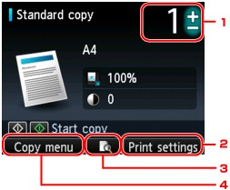

This section describes the procedure to copy with Standard copy. For the basic procedure to make copies, refer also to Copying.
-
Make sure that the machine is turned on.
-
Press the COPY button.
The Copy standby screen is displayed.
-
Load paper.
-
Load the original document on the Platen Glass or in the ADF.
 Note
Note-
For details on the types and conditions of originals which you can copy, refer to Loading Paper / Originals.
-
-
Specify the settings as necessary.
-
Number of copies
Specify by using the + or - button.
-
Print settings
By pressing the right Function button, the print settings screen is displayed.
On the print settings screen, you can change the settings such as magnification and intensity.
-
Preview
By pressing the center Function button, you can preview an image of the printout on the preview screen.
-
Copy menu
By pressing the left Function button, the copy menu screen is displayed.
You can select a copy menu to specify various layouts.
Note-
To reset the settings of magnification, intensity, and number of copies, press the Stop button.
-
-
Press the Color button for color copying, or the Black button for black & white copying.
The machine starts copying.
Remove the original on the Platen Glass or from the Document Output Slot after copying is complete.
 Important
Important-
If you load the original on the Platen Glass, do not open the Document Cover or remove the original while Scanning document... is displayed on the screen.
-
If you load the original in the ADF, do not move the original until copying is complete.
Note-
To cancel copying, press the Stop button.
-
If you load the original on the Platen Glass, you can add the copying job while printing.
-
Adding the Copying Job (Reserve copy)
If you load the original on the Platen Glass, you can add the copying job while printing (Reserve copy).
The screen below is displayed when you can add the copying job.
Load the original on the Platen Glass and press the same button (the Color button or the Black button) as the one which you previously pushed.
Important-
When you load the original on the Platen Glass, move the Document Cover gently.
Note-
When Print qlty (print quality) is set High, or you load the original in the ADF, you cannot add the copying job.
-
When you add the copying job, the number of copies or the settings such as the page size or media type cannot be changed.
-
Pressing the Stop button cancels copying all the scanned data.
-
If you set a document of too many pages to add the copying job, Cannot add more copy jobs. Please wait a while and redo the operation. may appears on the LCD. Press the OK button and wait a while, then try copying again.
-
If Failed to add copy job while copying. Start over from the beginning. appears on the LCD when scanning, press the OK button, then press the Stop button to cancel copying. After that, copy the documents that have not been finished copying.